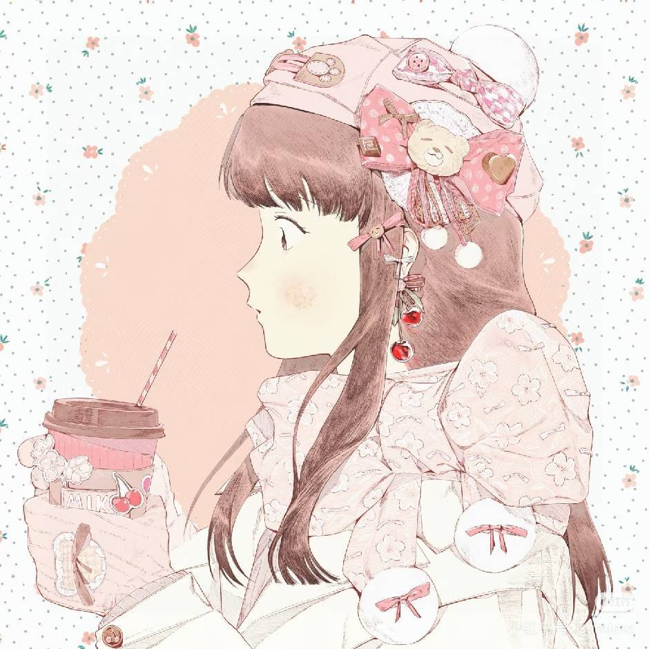
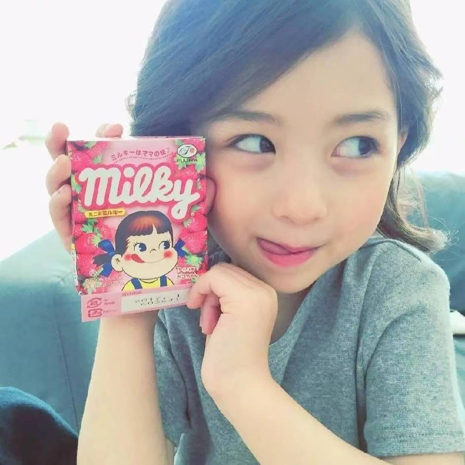

项目愿景与背景
Project Vision & Background
多光谱成像识别材料成分数据管理系统致力于通过前沿的光谱分析技术，洞察物质的微观构成。我们以 结构稳定、安全高效 为系统的底层逻辑，打破传统材料数据管理的繁杂壁垒。旨在为用户构建一个高适应性、精准且全方位的数据中枢，让复杂的波长、波数等图谱数据变得触手可及。
多维可视化呈现
突破枯燥的数据堆砌，系统全面支持图谱数据可视化显示。通过直观的光波曲线与数值反馈，对数据进行可视化处理，让复杂的材料光谱变化一目了然。
全方位数据中枢
底层框架扎实，安全性高。不仅支持全方位的数据查询与精准定位，更允许用户自行设置精密数值，确保数据流转的高效与绝对准确。
极简交互体验
将复杂的测试与管理流程化繁为简。界面设计秉承简单明了的原则，操作简便，编辑灵活，为用户提供极高适应性的极致流畅体验。
技术部门
唐晨枫
前端交互 / UX 设计
- 前端交互 / UX 设计
- 动态光谱可视化图表接入
- 系统 UI 级视觉审美把控
杨润其
后端功能/创意
- 后端核心功能实现
- 项目创意提出
- 系统整体用户体验优化

李思语
前端交互/UX设计
- 搜索功能模块设计与实现
- 页面布局重构与响应式适配
林铭珩
系统测试与运维
- 端到端功能测试与性能评估
- 数据库部署与检索链路优化

李金格
项目协调管理
- 研发时间线与版本迭代追踪
- 技术文档归档与整合
美术与文字部门
王芊文
视觉设计
- 系统界面整体视觉风格界定
- 页面风格构思与样式绘制
- 组件与背景美工设计
刘志豪
材料撰写/项目包装
- 开发文档规范化撰写
- 项目展示PPT设计
- 系统功能模块描述与版式校对
谢孟轩
媒体 / 素材处理
- 核心视觉素材拍摄与后期处理
- 深色玻璃拟态背景纹理构建
- 各分辨率下高清贴图适配与导出
研发历程
3.15
项目构想
确立系统的主要功能以及组内分工
3.17
前端交互框架完成
依托后端设计的交互功能，大体完成前端交互功能的创建，基本构建出前端页面的雏形
3.19
完成前端美化设计
在前端框架的基础上，对按钮、页面风格、布局、动画等进行了重新设计，使前端页面更加美观
3.22
后端核心功能实现
采用Spring Cloud微服务架构，通过服务网格实现跨模块通信治理
3.25
前端设计代码实现
将重新设计的前端样式用代码实现，并适配不同的屏幕尺寸
3.31
前后端对接
将成熟的前端网页与后端源码对接，使之成为真正完整的项目